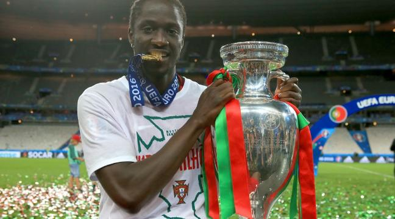

Le Portugal bat la France et remporte l'Euro 2016
Le match : 0-1 (a.p.)
L'histoire était écrite d'avance. Après l'Euro 1984 et la Coupe du monde 1998, l'équipe de France devait gagner son troisième trophée à domicile. Toutes les conditions étaient réunies pour que le rêve se réalise. Mais le conte de fées ne s'est pas bien terminé. Battus par le Portugal en prolongation (0-1), sur une frappe puissante de l'attaquant lillois Eder (109e), auteur d'une entrée tonitruante, les Bleus sont tombés de haut. Malgré la blessure rapide de Cristiano Ronaldo (voir ci-dessous), la Seleção a survécu et remporte son premier Euro. Elle inflige aussi aux Français une défaite cruelle au terme d'une rencontre globalement fermée. Un scénario qui n'est pas sans rappeler la finale de l'Euro 2004, perdue chez eux par les Lusitaniens face à la Grèce. Comme contre l'Allemagne, les Bleus étaient pourtant partis à l'abordage dès les premières minutes de jeu. Et un peu comme en demi-finales, c'est Antoine Griezmann qui s'est procuré la première occasion, sur une tête lobée en pleine course, bien claquée en corner par Rui Patricio (10e). Remplis de bonnes intentions, à l'image de l'épatant Moussa Sissoko, et visiblement pressés de prendre les devants, les Tricolores ont multiplié les offensives (22e, 30e et 34e) contre une formation portugaise bien timide, prise de vitesse sur chaque mouvement adverse et perdue après la perte de leur leader. Mais dans son malheur, l'équipe de Fernando Santos s'est appuyée sur ses valeurs collectives et sa grande solidarité pour s'accrocher. Et pousser les Bleus à redoubler d'efforts.
Après la pause, le scénario n'a pas changé. Toujours aussi volontaires, les joueurs de Didier Deschamps ont accentué leur domination et se sont créé de nouvelles opportunités (54e et 58e). Sans en profiter. L'entrée en jeu de Kingsley Coman à la place de Payet a fait beaucoup de bien aux Bleus qui ont soudainement retrouvé de l'énergie. Sur un centre parfait du joueur du Bayern, Griezmann aurait pu encore jouer les sauveurs, mais sa reprise de la tête a fui le cadre (66e). Encore sur une passe de Coman, Giroud s'est ensuite heurté à l'excellent Rui Patricio (75e), comme Sissoko (84e). Dans un Stade de France stressé par la tournure des évènements, Hugo Lloris a fait des miracles (80e et 104e) avant d'être plus tard sauvé par sa transversale (108e) sur un coup franc de Raphaël Guerreiro. André-Pierre Gignac a lui trouvé le poteau dans le temps additionnel (90e+1) alors que la victoire était toute proche. Elle a fini par échapper aux Bleus dans la prolongation. Ils ne gagneront pas cette année leur troisième Euro.
Lancé en fin de match (79e) par Fernando Santos, Eder a tout de suite pesé sur la défense tricolore. Entré en jeu alors que la charnière française avait déjà beaucoup donné, l'attaquant lillois n'a pas tardé à se montrer décisif. Il a d'abord obtenu un coup franc alors qu'il était lui-même l'auteur de la main imputée à tort à Laurent Koscielny. Un coup franc expédié par Raphael Guerreiro sur la transversale (108e). Puis sur l'action suivante, il a résisté à la charge de Koscielny et ouvert le score d'une frappe puissante à ras de terre, plein axe (109e). Nouveau héros de la nation portugaise, Eder n'aurait sans doute jamais joué si Ronaldo ne s'était pas blessé.
Le fait : la sortie sur blessure de Cristiano Ronaldo
Le match venait à peine de commencer quand le premier coup de théâtre est survenu. Sur un contact appuyé de Dimitri Payet, près de la ligne de touche, Cristiano Ronaldo s'est effondré, en se tordant de douleur (8e). Rapidement, les soigneurs sont arrivés à son chevet. Après leur intervention, l'attaquant du Real Madrid, touché au genou gauche, a réussi à reprendre sa place une première fois. Mais dix minutes plus tard (18e), il s'est à nouveau écroulé, en pleurs, en faisant signe à son banc qu'il voulait être remplacé. Le staff médical lusitanien est encore parvenu à repousser l'échéance, en strappant l'articulation douloureuse. Ce qui n'a pas suffi puisque le capitaine de la Seleçao a peu après définitivement quitté les siens (24e), évacué sur une civière et sous l'ovation du public. Avant de revenir suivre la fin du match sur son banc, en transe, et de pleurer encore au coup de sifflet final. De joie cette fois.
